Menu Design
Designing an experience, not just a menu. This project is an exploration of how visual elements can enhance the dining experience, reflecting the restaurant's identity while maintaining a clear and engaging structure. The final design embraces Chinese aesthetics with modern minimalism, carefully balancing typography, layout, and color to create a menu that is both functional and artistic.

My idea was to design the menu for a creative fusion cuisine Chinese restaurant, including both formal dining and afternoon tea. Inspired by my Visual Research, which explores classical Chinese aesthetics and modern graphic treatments, so I used many elements of Chinese style to emphasize the classical, retro visual effect.


 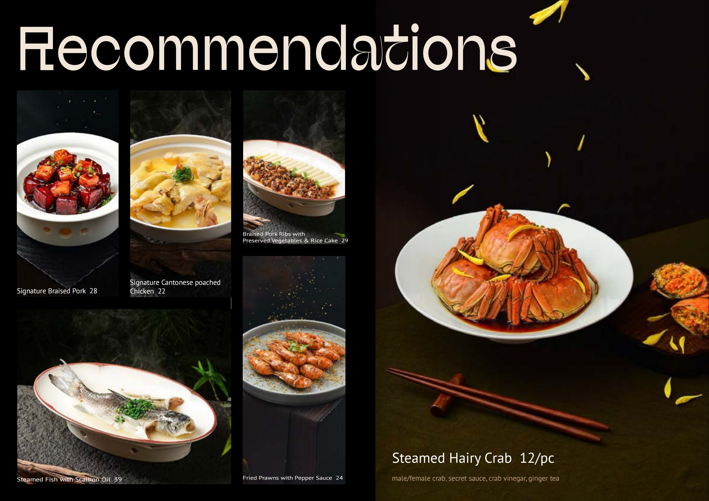
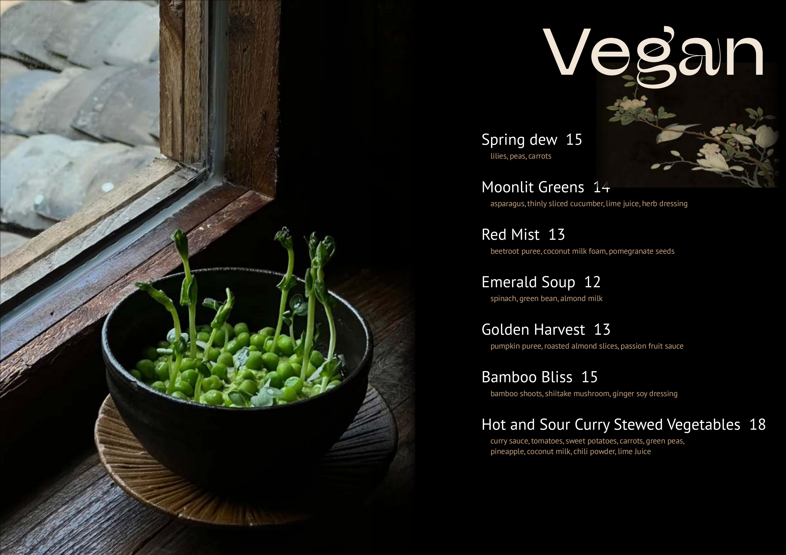
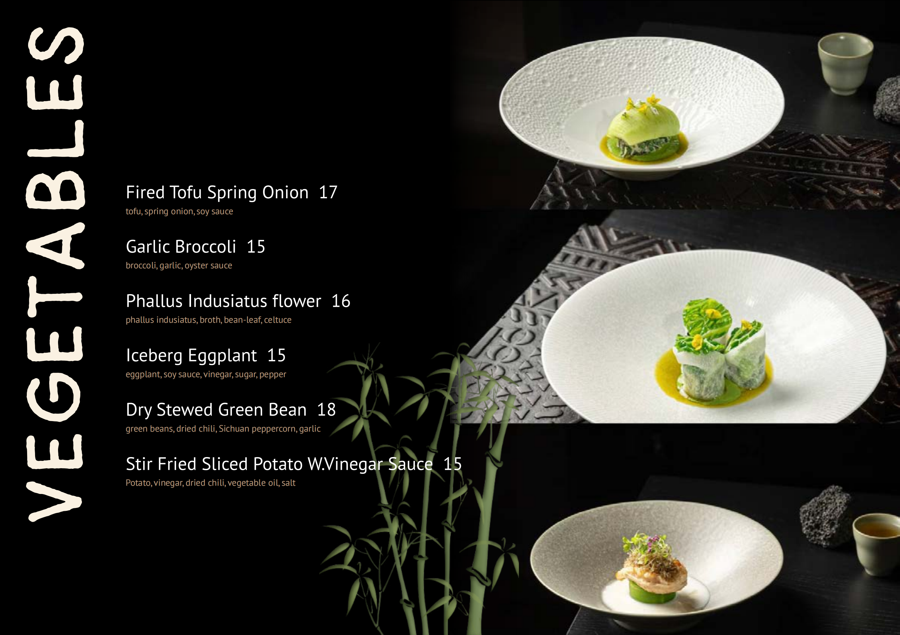
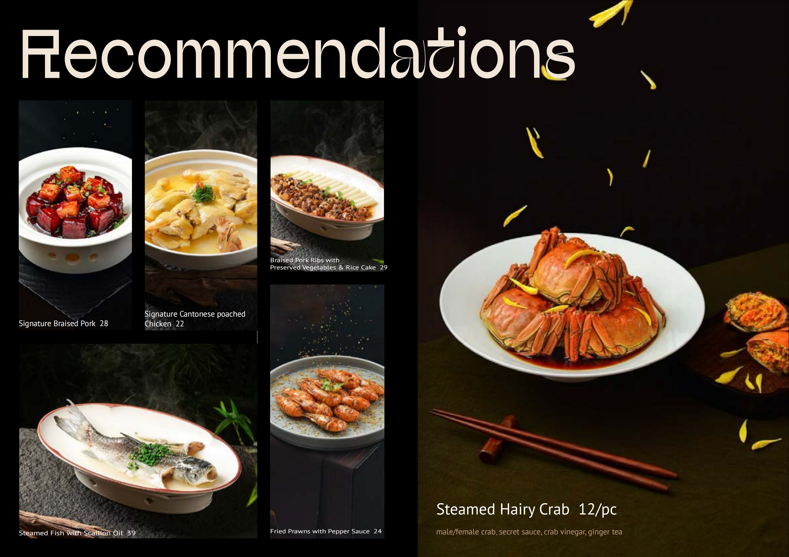
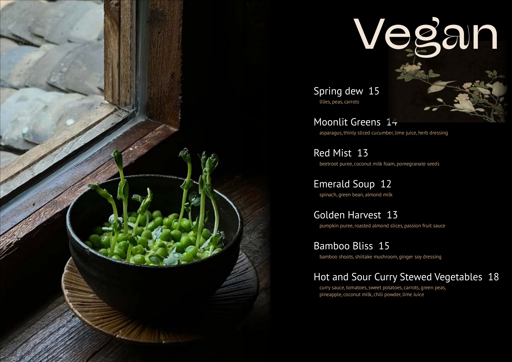
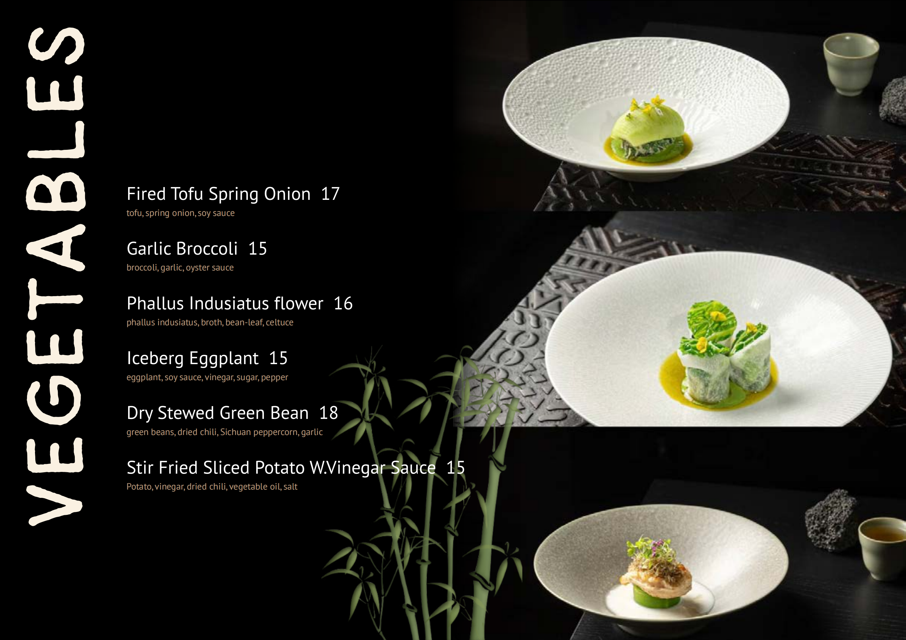
 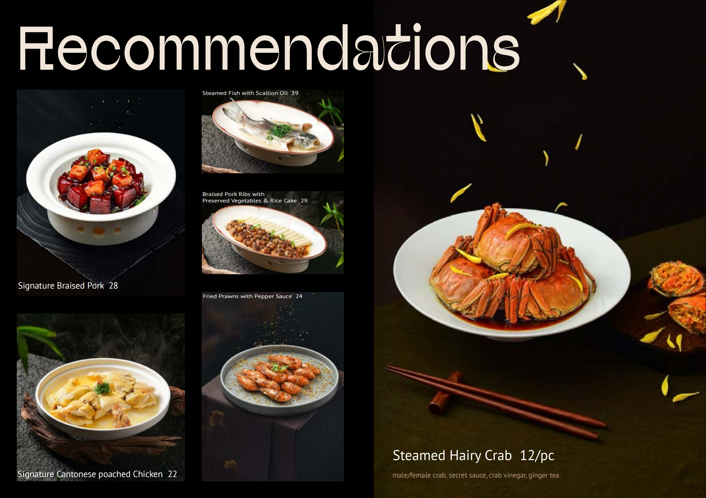
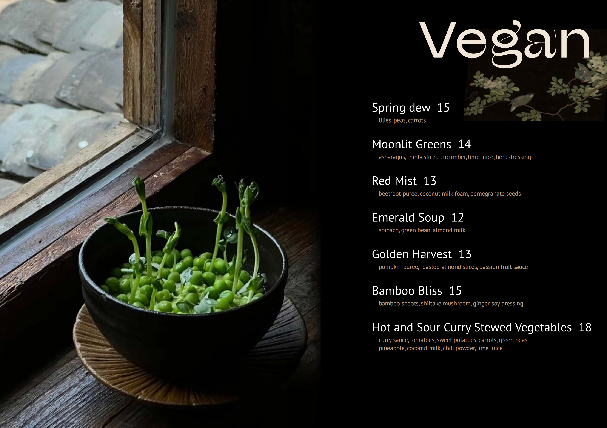
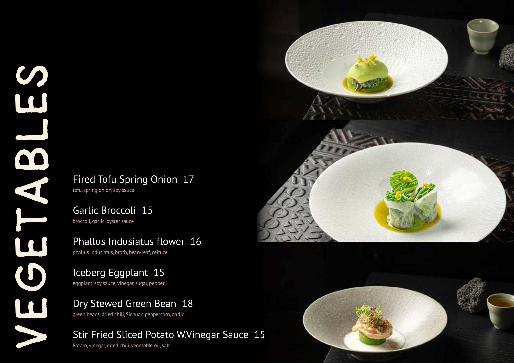
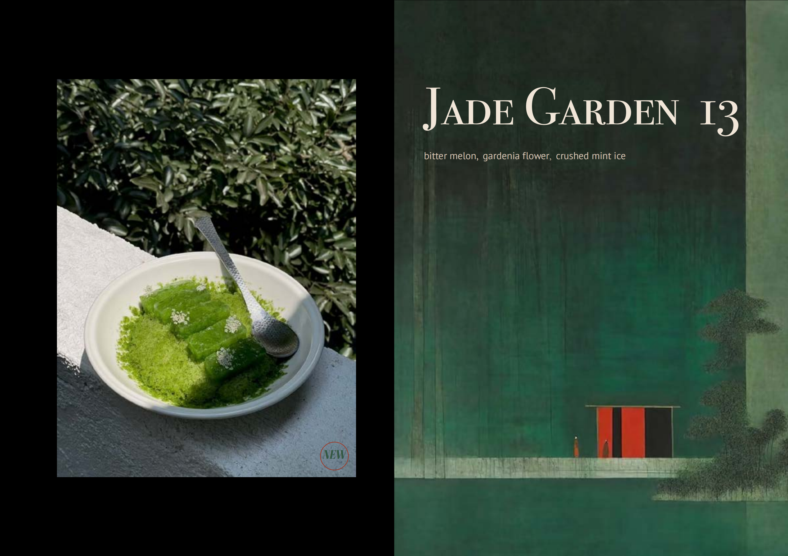
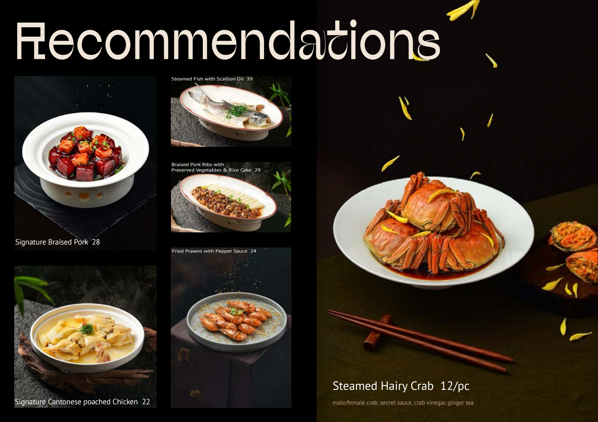
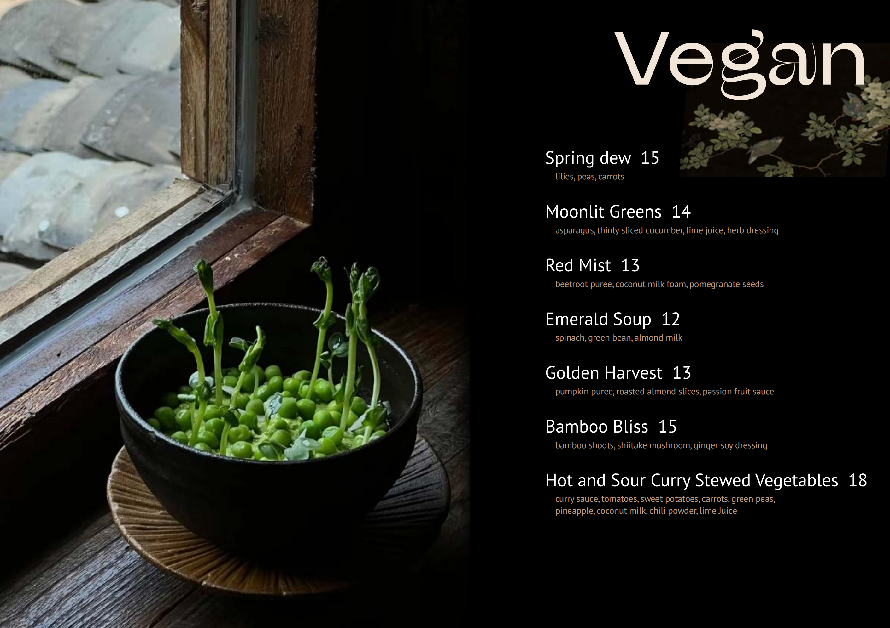
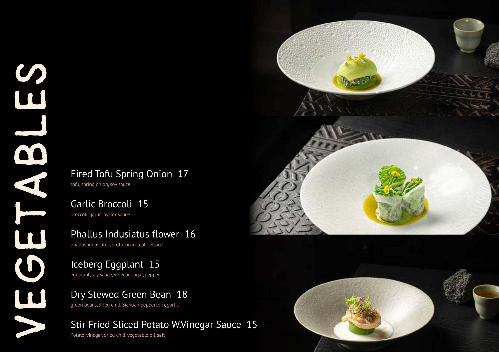
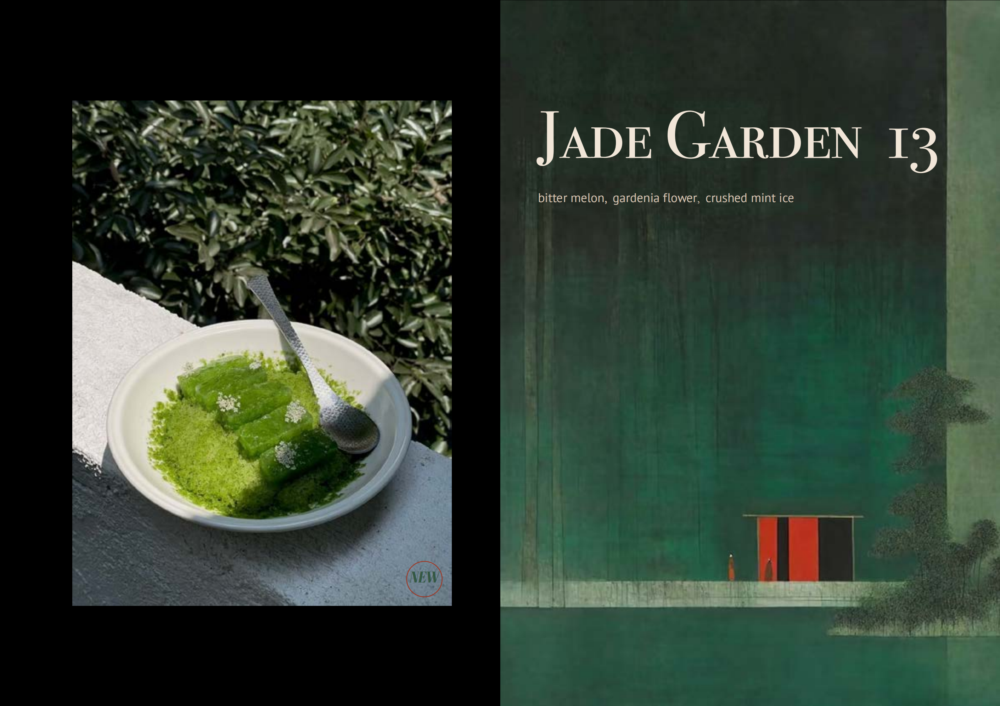